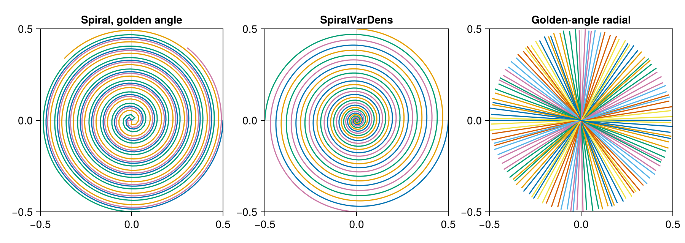

Create a Trajectory
A Trajectory holds the k-space positions of the samples of one contrast, in the units explained in Data Model, together with their sampling times and their division into profiles and, in stacked 3D trajectories, partitions. Simulations and AcquisitionData need one trajectory per contrast. This guide shows how to create the built-in trajectories, how to build one from your own nodes and how to set the sampling times.
Built-in Trajectories
trajectory creates a built-in trajectory from the floating-point type of its nodes and times, the name of the trajectory, the number of profiles and the number of samples per profile. The type has to match that of the image and the k-space data, and a call without the type fails (#371). The 2D trajectories are "Cartesian", with one line of the grid per profile, "EPI", with EPI_factor lines per profile, "Radial", with one spoke per profile, the spirals "Spiral", "SpiralVarDens", "SpiralDualDens" and "SpiralPerturbed", with one interleave per profile, and "OneLine", whose profiles all lie on one line through the center. In 3D, "Cartesian3D" stacks numSlices partitions of Cartesian lines, "StackOfStars" is meant to stack radial ones, and "Kooshball" has spokes in all directions. "EPI" and "StackOfStars" don't work as intended yet; see the limits at the end. Keyword arguments set further options:
windingsis the number of turns of each spiral interleave, andangleOffsetspaces the interleaves equally,"equispaced", by the golden angle of 137.5°,"golden", or randomly,"random". For"Radial",angleOffsettakes the symbols:equispacedand:random.- In
"SpiralVarDens", the radius grows with the angle to the poweralpha, and in"SpiralDualDens", the first half of the turns liesdensityFactortimes closer together than in"Spiral"; in both cases, 1.0 gives the plain spiral, and larger values sample the center more densely and the edge of k-space more sparsely. angleis the angle of"OneLine"in radians, andTEandAQset the sampling times described below.
densityFactor and angle have to be Float64 numbers, such as 2.0 and pi / 4, and TE and AQ floating-point numbers. Keyword arguments that a trajectory doesn't use are ignored without a warning, so a misspelled winding = 8 gives the default number of turns. The example creates a spiral with four interleaves at golden-angle offsets and a variable-density spiral:
using MRIReco
spiral = trajectory(Float64, "Spiral", 4, 512; windings = 8, angleOffset = "golden")
varDens = trajectory(Float64, "SpiralVarDens", 4, 512; windings = 8, alpha = 2.0)
size(kspaceNodes(spiral)), numProfiles(spiral), numSamplingPerProfile(spiral)((2, 2048), 4, 512)Custom Trajectories
Trajectory(nodes, numProfiles, numSamplingPerProfile) builds a trajectory named "Custom" from a matrix with one row per dimension and one column per sample, ordered profile by profile and, for a stack of partitions, partition by partition; the keyword numSlices gives the number of partitions, without which the default sampling times only cover the first one and the reconstruction of a Cartesian stack fails. The nodes have to lie between -0.5 and 0.5; otherwise, the NFFT stops with an error about the range of the nodes (#270). scale(tr, factor) returns a copy with the nodes divided by factor, for example to convert them from other units.
With cartesian = true, the samples should lie where "Cartesian" or, in 3D, "Cartesian3D" with the same numbers puts them, in the same order: unless a correction map is used, the reconstruction and the default simulation, "fast", apply FFTs, which don't use the nodes. Set circular = true for a trajectory with a circular field of view, as the built-in radial and spiral ones do; the reconstructions "direct", "standard" and "multiCoil" then set the image to zero outside a circle, or a sphere in 3D, whose diameter is the largest side of the image, and with a correction map, the encoding operator ignores the image outside it, so that the default simulation drops that part of the object (#372). The example builds a radial trajectory whose spokes follow each other at 111.25°, the golden angle for spokes, which repeat after 180° rather than 360°:
profiles, samples = 64, 128
goldenAngle = pi * (sqrt(5) - 1) / 2 # 180° divided by the golden ratio, about 111.25°
positions = range(-0.5, step = 1 / samples, length = samples)
nodes = zeros(2, samples, profiles)
for l in 1:profiles
θ = goldenAngle * (l - 1)
nodes[1, :, l] .= positions .* cos(θ)
nodes[2, :, l] .= positions .* sin(θ)
end
radial = Trajectory(reshape(nodes, 2, :), profiles, samples; circular = true)
string(radial), extrema(kspaceNodes(radial))("Custom", (-0.5, 0.4995730270036413))The figure draws each profile of the three trajectories as a line:
using CairoMakie
fig = Figure(size = (900, 320))
titles = ["Spiral, golden angle", "SpiralVarDens", "Golden-angle radial"]
for (i, tr) in enumerate([spiral, varDens, radial])
k = reshape(kspaceNodes(tr), 2, numSamplingPerProfile(tr), numProfiles(tr))
ax = Axis(fig[1, i], title = titles[i], aspect = DataAspect(),
limits = (-0.5, 0.5, -0.5, 0.5))
for l in 1:numProfiles(tr)
lines!(ax, k[1, :, l], k[2, :, l])
end
end
fig
Sampling Times
Each trajectory stores the sampling times of its nodes, which readoutTimes returns, and the time TE, which echoTime returns, both in seconds. The built-in trajectories and Trajectory without times start every profile at TE and spread its samples over the readout duration AQ, so TE is the time of the first sample of each profile, and it equals the echo time only for readouts that start in the center of k-space, such as spirals. For other timings, for example to set TE to the echo time of a full Cartesian line or for an echo train whose times continue from one profile to the next, pass TE and the keyword times to Trajectory: a Vector with one time per node and the element type of the nodes; trajectory ignores times. The times only matter where off-resonance or relaxation is simulated or corrected; Signal Model and Encoding Operators explains how the reconstruction counts them from TE.
Limits
"StackOfStars"returns the nodes of"Cartesian3D"instead of radial stacks (#369)."EPI"marks its nodes as Cartesian, although they don't lie on the grid, so that the FFTs put them at the wrong positions (#370).- Without a correction map, the reconstruction and the default simulation place Cartesian samples on the k-space grid of the image by counting along each axis, not by their nodes, and fail when the trajectory has more samples, profiles or partitions than the image has points along that axis. Unless the counted positions are the nodes, the samples end up in the wrong place. For
"Cartesian"with the defaultkminandkmaxand for"Cartesian3D", they are the nodes only when, along each axis, the image has as many points as the trajectory or, when the trajectory has an even number of them, a whole multiple of it (#373). "Radial"withangleOffset = :golden,"SpiralVarDens"withangleOffset = "random"and unknown names fail with anUndefVarError(#371). The custom example above builds a golden-angle radial trajectory.
This page was generated using Literate.jl.